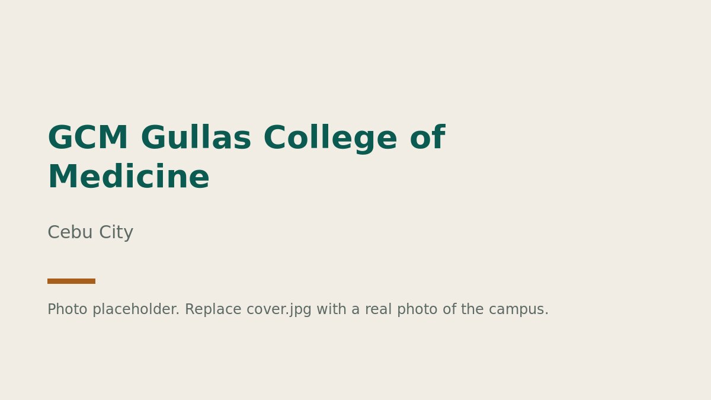
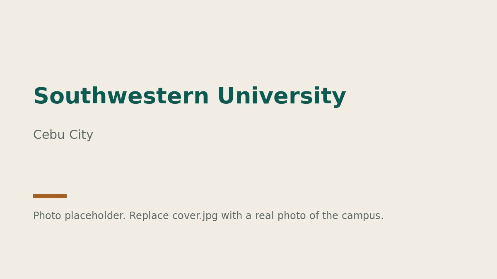
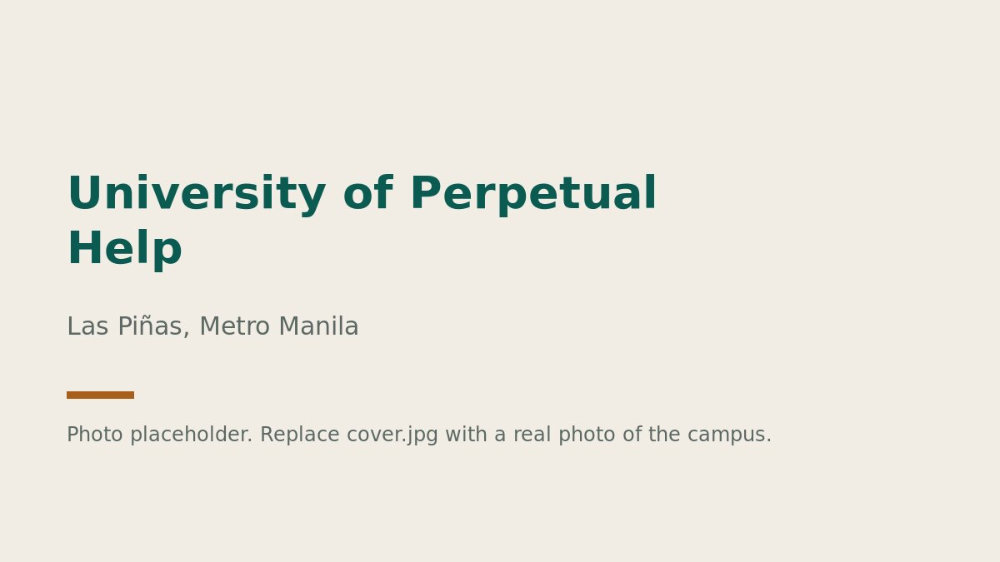
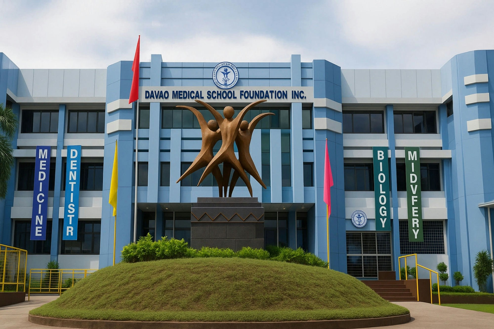
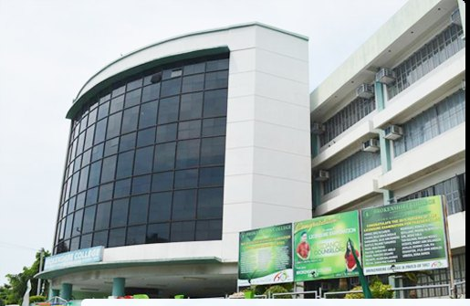
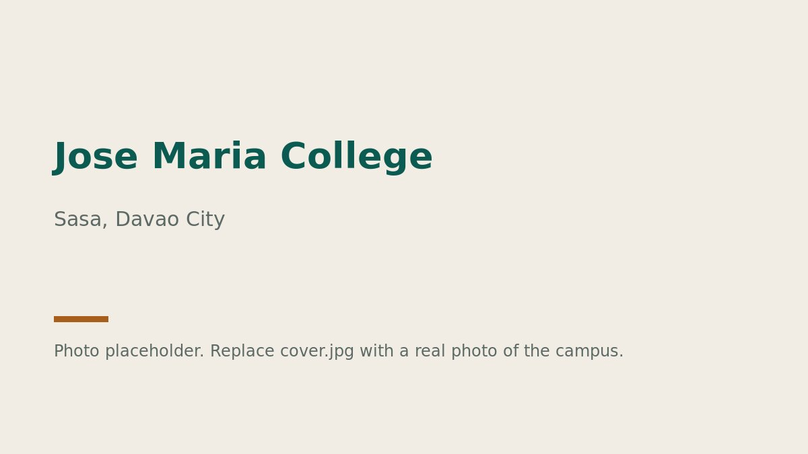

Six colleges
Medical colleges in the Philippines for Indian students
Six, not sixty. One of these was my own college, I visited three more, and I know graduates from all six. Open a tab for the full profile, including the parts a brochure leaves out.
| College | City | My rating | Best for | FMGE coaching on campus | Indian batch | Indian food |
|---|---|---|---|---|---|---|
| GCM Gullas | Cebu City | ★★★★★ | Lowest entry cost with coaching included | Yes | Large | Limited |
| Southwestern | Cebu City | ★★★★☆ | Hospital rotations, small Indian crowd | No | Small | Okay |
| Perpetual Help | Las Piñas, Metro Manila | ★★★★☆ | The Indian community and food | Yes | Largest | Good |
| DMSF | Davao City | ★★★★☆ | Clinical volume and the anatomy lab | Yes | Medium | Good |
| Brokenshire | Davao City | ★★★☆☆ | Small batches and faculty attention | Yes | Small | Good |
| Jose Maria | Sasa, Davao City | ★★★☆☆ | The tightest budget | Yes | Very small | Very limited |
2027 intake
Which colleges are taking admissions now
Philippine medical colleges run one main intake a year. Classes for the 2027 intake begin in August and September, and applications stay open until the batch fills. The dates below are what each admissions office told me in November 2026; confirm the current position before you pay anything.
| College | City | Applications | Classes begin |
|---|---|---|---|
| GCM Gullas | Cebu City | Open | August 2027 |
| Southwestern | Cebu City | Open | August 2027 |
| Perpetual Help | Las Piñas, Manila | Open | August 2027 |
| DMSF | Davao City | Open | August 2027 |
| Brokenshire | Davao City | Open | August 2027 |
| Jose Maria | Sasa, Davao City | Open | August 2027 |
All six accept foreign students directly through their own admissions offices. The bottleneck in every case is the same three things: the NEET scorecard, the document authentication, and the embassy appointment. Start in the spring and there is time for all three.
The six, one by one
Open a college
Each tab carries the full profile: the facts, what works, what you give up, the fee sheet where the college publishes one, and the questions to ask before you pay.
Cebu City
GCM Gullas College of Medicine (UV Gullas)
The lowest entry cost of the six, with on-campus FMGE coaching, an in-house Indian mess, and heavy clinical exposure at Vicente Sotto Memorial Medical Center. It has the largest Indian batch in Cebu and functional, basic hostels. When total budget is the deciding factor, this is the standard baseline choice.

colleges/gcm-gullas/photos/cover.jpg with a real campus photo.About & The Facts
Established in 1977 as the medical arm of the University of the Visayas (founded 1919), UV Gullas College of Medicine operates from its dedicated campus in Banilad, Cebu. Recognized by WDOMS and the National Medical Commission (NMC), its US-patterned curriculum is taught entirely in English.
Official Motto: "Amor, Servitium, Humanitas" (Love, Leadership, and Service to Humanity)
Vision: "To serve the world and serve humanity through excellence in healthcare and affordable medical education."
- Location
- 6014 Gov. M. Cuenco Ave, Banilad, Cebu
- Programme
- BS Biology + 4-Yr MD + 12-Mo Internship (NMC 54+12 Compliant)
- Language
- English (100%)
- FMGE / NExT
- Integrated on-campus coaching
- Official site
- uvgullasmedicalcollege.com / uvgullas.com
Best value for money among Philippine medical universities. Cebu is manageable, the hospital rotation bed volume is substantial, and the campus includes structured FMGE coaching. Expect a large Indian peer group, basic dormitories, and high competition for faculty attention in practical sessions.
- Help Desk: Dedicated campus office for 9(F) visa endorsement, NBI clearance, and ACR I-Card processing.
- Hostels: Separate secure male/female dormitories with 24/7 CCTV and biometric access.
- Indian Mess: In-house dining serving daily North and South Indian vegetarian and non-vegetarian food.
- Hospitals: Rotations at Vicente Sotto Memorial Medical Center (VSMMC, 1,200+ beds) and Chong Hua Hospital.
- Scholarships: Academic merit tuition reductions for top performers in pre-med and semester examinations.
Compiled from official University of the Visayas medical bulletins, 2026–2027 fee circulars, and verified reports from active student council representatives and recent graduates.
The good
What works here
- The entry cost is the lowest of the six. For a family that has a hard ceiling, this is the college that keeps the whole five years inside it.
- FMGE coaching is on campus. That sounds small until year four, when the alternative is an online course, a lot of self-discipline and nobody checking whether you watched it.
- Cebu is the easier city. Smaller than Manila, cheaper, and calmer. Students move around at night here in a way they do not in parts of Metro Manila.
- Hospital exposure is real. The affiliated hospitals are busy, and students get into the wards rather than watching from a corridor.
- Food is manageable. Limited compared with Manila, but Cebu has Indian restaurants and spice shops, and the college area has places that will cook for you.
- Large Indian batch. If you are the kind of student who needs company to survive the first year, this is a feature, not a flaw.
The trade
What you give up
- The batch is large. You will not be a name to most faculty in the first two years. If you learn by being noticed and questioned, that is a real cost.
- The hostel is basic. Clean enough, not comfortable. Do not arrive expecting air conditioning and privacy at the lowest price quoted.
- Competition for attention. A big batch means fewer minutes per student in practicals. The students who do well here are the ones who ask first.
- It is a value pick, not a prestige pick. Nobody in India will be impressed by the name. What matters is the NMC listing and your FMGE score.
Fit
Who should pick it
A student with a clear budget ceiling who does not need to be the only Indian in the room, and who will use the on-campus coaching instead of treating it as optional. It also suits families who want the city to be the safe, boring part of the decision.
Not for
Who should skip it
Anyone who needs small classes and personal attention, anyone who cannot handle a crowd, and anyone whose plan depends on a comfortable hostel. Look at Brokenshire for attention or Perpetual for a bigger Indian community.
Money
Fees for the 2026-2027 intake
Published by the college for the 2026-2027 intake. Exchange rate used: 1 PHP = Rs 1.4477 and 1 USD = Rs 92.6805, as of 22 November 2026. The Indian-side charges (enrolment, Level 1 semesters, documentation, visa, ticketing, books) are already quoted in rupees.
| Particular | Amount |
|---|---|
| Enrolment and admission fee | Rs 2,25,000 |
| Level 1, 1st semester | Rs 2,25,000 |
| Level 1, 2nd semester | Rs 2,25,000 |
| Documentation, visa, ticketing and other services | Rs 1,50,000 |
| Book fee | Rs 40,000 |
| MD tuition per semester | 1,25,000 PHP (Rs 1,80,966) |
| Food and accommodation per month | 14,000 PHP (Rs 20,268) |
- FMGE coaching: face-to-face coaching by Indian doctors, on the Gullas and KINGS campus.
- Visa costs in the Philippines: visa conversion and extension are paid by the student at actual cost.
- Refund: the enrolment fee is not refunded.
Campus facilities: 3D Anatomage, laboratory, classroom, auditorium, hospital, library.
What the admissions package includes: MEA and foreign-affairs authentication, apostille of academic documents, visa appointment and preparation, embassy visa interview fee, visa from the Philippines embassy in India, foreign-exchange assistance, one India-Philippines flight ticket, airport pickup and transfer to the hostel, and a Philippines mobile SIM.
Money
What to ask the college for
The sheet above is the 2026-2027 figure published by the college. Fees change every intake, so confirm the current sheet in writing before you pay. Ask the admissions office for these things as well:
The current fee sheet, with the year printed on it
Tuition per year, not per semester, and the total for the full programme.
What the hostel costs, separately
Per month or per semester, and what is included. Ask whether air conditioning is extra.
Which fees are refundable
If your visa is refused, what comes back and what does not.
Whether FMGE coaching is included
On campus, and whether it is part of tuition or a separate charge later.
The internship arrangement
Which hospital, for how long, and whether it satisfies NMC's onsite requirement.
The written confirmation of your seat
On college letterhead, before you transfer money to anyone.
Then compare the totals on the cost page, including flights and visa renewals. The cheapest first year is not always the cheapest degree.
Before you pay anyone
1. The college on the NMC list. 2. The college on WDOMS. 3. The fee sheet, from the college's own admissions office, not from the person asking you to pay.
If a broker cannot tell you where the college appears on those two lists, that is your answer.
Official website: uvgullasmedicalcollege.com / uvgullas.com. For direct fee breakdowns and unbiased guidance, contact Dr. Nitz.
The document checklist is worth ten minutes before any payment.
Cebu City
Southwestern University PHINMA (SWU School of Medicine)
Established medical university in Cebu City with deep clinical rotation volume at Sacred Heart Hospital (SWU Medical Center) and Vicente Sotto Memorial Medical Center. Features a smaller, more integrated Indian batch and English immersion, requiring self-directed FMGE preparation.

colleges/southwestern/photos/cover.jpg with a real campus photo.About & The Facts
Founded in 1946 in Cebu City and acquired by PHINMA Education in 2015, SWU School of Medicine operates an integrated spiral curriculum emphasizing early patient contact and clinical problem-solving. Recognized by WHO (WDOMS) and the National Medical Commission (NMC).
Official Motto: "Scientia, Integritas, Fidelitas" (Science, Integrity, Fidelity)
Vision: "To provide an inclusive, innovative, and diverse learning environment, extending quality healthcare education through modern clinical practice."
- Location
- Urgello Street, Sambag II, Cebu City
- Programme
- BS Biology + 4-Yr MD + 12-Mo Internship (NMC 54+12 Compliant)
- Language
- English (100%)
- FMGE / NExT
- Self-directed (external online platforms)
- Official site
- swu.edu.ph
High-yield clinical rotations with hands-on ward responsibilities. The smaller Indian batch forces faster English fluency and local adaptation. Students must be disciplined self-starters who arrange their own FMGE study schedule from year one.
- Help Desk: Dedicated foreign student liaison handling 9(F) visa endorsements and ACR I-Cards. Accepts direct international admissions.
- Hostels: On-campus dormitories and verified private apartments within walking distance along Urgello and Aznar Coliseum.
- Food & Living: No dedicated institutional Indian mess; students self-cook using induction cookers or use local canteens and spice shops.
- Hospitals: Rotations at SWU Medical Center (Sacred Heart Hospital, 200+ beds) and Vicente Sotto Memorial Medical Center (VSMMC, 1,200+ beds).
- Scholarships: PHINMA academic excellence tuition discounts and Dean's Honors List concessions based on semester GPA.
Compiled from official SWU PHINMA registrar bulletins, hospital affiliation records, and verified feedback from recent clinical clerks and graduates.
The good
What works here
- The clinical years are the real thing. Busy wards, real patients, and students are expected to work rather than observe. Students deliver babies and assist in theatre here.
- Faculty who have practised. The clinicians teaching you have seen the cases they describe. That sounds obvious. It is not universal.
- Small Indian batch. Fewer countrymen means more English spoken, more Filipino friends, and less time in a comfort bubble. That is the difference between passing and coasting.
- An established university. The campus has been running long enough that the processes, however slow, exist and work. You are not the first Indian student anyone has seen.
- Cebu itself. Cheaper than Manila, safer than the reputation of big cities, and small enough that you learn it in a month.
The trade
What you give up
- No in-house FMGE coaching. This is the big one. At Gullas or Perpetual the coaching comes to you. Here you buy an online course and hope you have the discipline. Many students do not.
- Administration is slow. Documents, transcripts and letters take longer than they should. Budget extra weeks for anything official, and never leave it to the last week before a deadline.
- The campus can feel impersonal. It is a large university, not a small college. You are one of many, especially in the first two years.
- Indian food is only okay. You will find it, but a decent Indian mess is not around the corner. Learn to cook.
- Quiet social life if you do not make an effort. Cebu is fun, but nothing is arranged for you. The first six months are lonely unless you join something.
Fit
Who should pick it
A self-directed student who wants the hospital more than the classroom, who will buy an FMGE course without being told, and who does not need a large Indian crowd to feel at home. It also suits someone who wants a university name that carries some weight locally in Cebu.
Money
What to ask the college for
Fees and facilities: this college does not publish a fee sheet or a facilities list online. Ask the admissions office for the current fee sheet, the affiliated teaching hospital, and the on-campus facilities list, in writing.
Fees change by intake, so no number is printed here. Write to the admissions office and ask for these in writing:
The current annual fee sheet
With the academic year printed on it, and the total across the whole programme.
Hostel cost and what it includes
Monthly or per semester, and how far it is from the hospital you will rotate in.
The refund policy in writing
Especially if the visa is refused or you withdraw before enrolment.
The internship hospital and duration
Which hospital, how long, and confirmation that it meets NMC's onsite requirement.
Which fees are payable in pesos on arrival
Some charges are local and do not appear in the quotation you get in India.
Then add flights, visa renewal, insurance and living costs. The cost page walks through every line.
Before you pay anyone
1. The college on the NMC list. 2. The college on WDOMS. 3. The fee sheet from the college itself.
A Southwestern seat quoted at a price that does not match the college sheet is carrying something extra, and that something is not a college fee.
Official website: swu.edu.ph. For direct fee breakdowns and unbiased guidance, contact Dr. Nitz.
The document checklist for this intake.
Las Piñas, Metro Manila
University of Perpetual Help System DALTA (UPHSD)
The largest Indian medical student community in the Philippines, located in Metro Manila. Features full in-house Indian messes, campus-based FMGE coaching, and direct training at the University of Perpetual Help DALTA Medical Center. Higher city living costs and urban congestion are the primary trade-offs.

colleges/perpetual/photos/cover.jpg with a real campus photo.About & The Facts
Founded in 1975 by Dr. Jose de Guzman Tamayo and Dr. Josefina Laperal Tamayo, UPHSD is a major university system centered on medical and health sciences. The College of Medicine is recognized by WHO (WDOMS) and NMC, hosting the largest Indian student community in the Philippines.
Official Motto: "Character Building is Nation Building" (Latin: "In Omnia Paratus")
Vision: "To emerge as a premier university delivering the total spectrum of healthcare and producing prime healthcare providers."
- Location
- Alabang-Zapote Rd, Pamplona 3, Las Piñas, Manila
- Programme
- BS Biology + 4-Yr MD + 12-Mo Internship (NMC 54+12 Compliant)
- Language
- English (100%)
- FMGE / NExT
- Yes, structured on-campus coaching
- Official site
- perpetualdalta.edu.ph
The gentlest transition for students who require an established Indian peer support system, Indian dining facilities, and structured coaching on campus. The trade-offs are higher Metro Manila rent, daily traffic along Alabang-Zapote Road, and a crowded batch.
- Help Desk: Full-time International Student Affairs office for 9(F) visa conversions, Bureau of Immigration filings, and NBI clearances.
- Hostels: Comprehensive male/female student dorms in Pamplona 3 with 24/7 biometric security and air conditioning.
- Indian Mess: Multiple operating Indian messes serving authentic North and South Indian vegetarian and non-vegetarian food daily.
- Hospitals: University of Perpetual Help DALTA Medical Center (500 beds on campus), plus Manila public hospital rotations.
- Scholarships: Academic honors tuition incentives for students maintaining dean's list distinction.
Compiled from official UPHSD medical school circulars, hospital bed occupancy filings, and current Indian student association records.
The good
What works here
- The Indian community is the biggest of the six. Seniors who have cleared FMGE, notes passed down, someone to tell you which hostel is a trap on your first week. That network is worth more than it sounds.
- FMGE coaching is established. Not a token weekend session. The coaching here has a track record and it runs alongside the course.
- Indian food is genuinely available. Restaurants, grocery stores with spices, and mess options. If food is the thing that would break you, this is the college that removes it.
- Hospital exposure is solid. Metro Manila hospitals see a very wide case mix, and students get into the wards.
- Easy to reach India. More flights out of Manila than out of Cebu or Davao, which matters when there is an emergency at home.
The trade
What you give up
- Traffic and pollution. A commute that should take twenty minutes takes an hour. That hour comes out of your study time, every day, for five years.
- A higher cost of living. Rent, food and transport all cost more than Cebu or Davao. Budget accordingly, not by the college's first-year quote.
- Distraction. A large Indian batch can be a comfort or a party, depending on the company you keep. Several students say they studied better after moving apartments away from the group.
- You are one of many. Large cohort, and the campus is a business. Do not expect to be chased if you fall behind.
Fit
Who should pick it
A student who knows their limit and wants support built in: people from home, food from home, and coaching in the building. It also suits a family that values being able to reach the student with a short flight.
Not for
Who should skip it
Anyone who needs quiet and cheap, and anyone who is easily pulled into a crowd. If you know you will spend more evenings out than in the library, a smaller batch in Cebu or Davao is a better fit. See Southwestern or Brokenshire.
Money
What to ask the college for
Fees and facilities: this college does not publish a fee sheet or a facilities list online. Ask the admissions office for the current fee sheet, the affiliated teaching hospital, and the on-campus facilities list, in writing.
Manila changes the monthly arithmetic more than the college does. Ask for both:
The current fee sheet, with the year on it
Annual tuition and the total across the programme, not a per-semester figure that hides the rest.
Hostel cost, and what a nearby apartment costs
Ask students, not the office. The office will quote the hostel; the students will tell you what rent actually is.
Whether coaching is included or separate
And what it costs in the years it runs.
The refund policy if the visa is refused
In writing, before any transfer.
Which hospital you rotate in
And how you get there. In Manila, distance is measured in time, not kilometres.
Compare the full five-year total, not the first year. The cost page shows how the city changes the number.
Before you pay anyone
1. The college on the NMC list. 2. The college on WDOMS. 3. The fee sheet from the admissions office.
Perpetual is one of the most recommended colleges in the country, because it is popular and easy to reach. Popular is not the same as right for you.
Official website: perpetualdalta.edu.ph. For direct fee breakdowns and unbiased guidance, contact Dr. Nitz.
The document checklist for this intake.
Davao City
Davao Medical School Foundation (DMSF)
The leading clinical hub in Mindanao, offering massive patient exposure at the 1,500-bed Southern Philippines Medical Center. Known for its advanced 3D virtual dissection anatomy simulation center and structured FMGE training in one of the safest cities in the Philippines.

colleges/dmsf/photos/cover.jpg with a real campus photo.About & The Facts
Established in 1976 as a consortium between Ateneo de Davao University, Brokenshire College, and San Pedro Hospital, DMSF is the premier medical institution in Mindanao. Recognized by WHO (WDOMS) and NMC, offering extensive clinical exposure via SPMC.
Vision: "Healthy communities enjoying a quality life."
Mission: "To provide humane, integral health sciences education and services with an emphasis on primary health care in instruction, research, and community engagement."
- Location
- Medical School Drive, Bajada, Davao City
- Programme
- BS Pre-Med + 4-Yr MD + 12-Mo Internship (NMC 54+12 Compliant)
- Language
- English (100%)
- FMGE / NExT
- Yes, by visiting Indian doctors
- Official site
- dmsf.edu.ph
Unmatched clinical case variety and patient flow in Mindanao. Davao City is clean, strictly governed, and safe. Higher tuition and flight logistics (connecting through Manila/Cebu) are the primary trade-offs.
- Help Desk: Active Foreign Students Liaison Office assisting with Bureau of Immigration compliance, ACR I-Cards, and local Davao police checks.
- Hostels: Separate men's and women's student residences in Bajada with biometric door locks and security guards.
- Indian Mess: On-site and hostel-affiliated Indian messes serving North and South Indian home-style food.
- Hospitals: Southern Philippines Medical Center (1,500+ beds apex government facility) and DMSF Hospital.
- Advanced Labs: 3D Anatomage digital tables, clinical simulation mannequins, and computerized bone laboratories.
Compiled from DMSF official academic catalogs, Southern Philippines Medical Center clinical rotation logs, and active student council data.
The good
What works here
- The anatomy lab is a real advantage. The 3D table helps when a cadaver is not available. It is a teaching aid, not a substitute for dissection, but it makes first year easier to understand.
- High patient inflow. You see a wider variety of cases here than in smaller hospitals, and variety is what makes clinical years useful.
- FMGE coaching by Indian doctors. People who sat the exam themselves, teaching for it. Different from a generic campus course.
- A functioning Indian mess. Food is settled, which removes a first-year stressor that most students underestimate.
- Davao is calmer and safer than its reputation. Five and a half years in Cebu and several trips to Davao, with no trouble walking at night. It is a smaller, more orderly city than Manila.
The trade
What you give up
- The fee is higher than the Cebu colleges. You are paying for the lab, the hospitals and the coaching. Decide whether those are worth the difference to you.
- Distance. A longer trip home, fewer direct flights, and an extra connection when there is an emergency. For some families that is the deciding factor.
- It can feel isolating. Smaller city, smaller Indian crowd than Manila, and less to do on a weekend. If you need a social scene, Davao will not provide it.
- Being the best-funded student does not make it the best fit. A few students arrive expecting the fee to solve motivation. It does not.
Fit
Who should pick it
A student whose priority is clinical exposure, whose family can absorb the higher fee, and who is comfortable in a quieter city. It suits someone who wants coaching from people who have cleared the exam rather than a general prep course.
Not for
Who should skip it
Anyone on a tight budget, anyone who needs a big Indian crowd, and anyone who will be flying home more than once a year. The cheaper Cebu options do the job. See Gullas or Southwestern.
Money
Fees for the 2026-2027 intake
Published by the college for the 2026-2027 intake. Exchange rate used: 1 PHP = Rs 1.4477 and 1 USD = Rs 92.6805, as of 22 November 2026. The Indian-side charges (enrolment, Level 1 semesters, documentation, visa, ticketing, books) are already quoted in rupees.
| Particular | Amount |
|---|---|
| Enrolment fee | Rs 2,50,000 |
| Level 1, 1st semester | Rs 2,50,000 |
| Level 1, 2nd semester | Rs 2,50,000 |
| Documentation, visa, ticketing and other services | Rs 1,50,000 |
| Book fee | Rs 40,000 |
| MD tuition per semester | USD 2,750 (Rs 2,54,871) |
| Food and accommodation per month | 15,000 PHP (Rs 21,716) |
- FMGE coaching: face-to-face coaching by Indian doctors, on the DMSF and KINGS campus.
- Visa costs in the Philippines: visa conversion and extension are paid by the student at actual cost.
- Refund: the enrolment fee is not refunded.
- Internship: the fee for the one-year internship is discussed at the time of internship.
Campus facilities: Hospital, hostel, cadaver lab, library, laboratory, 3D Anatomage, hostel rooms, mess hall.
What the admissions package includes: MEA and foreign-affairs authentication, apostille of academic documents, visa appointment and preparation, embassy visa interview fee, visa from the Philippines embassy in India, foreign-exchange assistance, one India-Philippines flight ticket, airport pickup and transfer to the hostel, and a Philippines mobile SIM.
Money
What to ask the college for
The price difference between DMSF and Cebu is real, so get it itemised rather than quoted as one lump:
Tuition per year and the programme total
With the academic year printed on the sheet.
What the anatomy lab access costs
Included in tuition or charged separately. Ask directly.
Hostel and mess costs, separately
Mess is often the line that changes between the quote and the reality.
Coaching fees and when they start
Which year, how many hours, and whether attendance is required.
The refund policy in writing
Particularly if the visa is refused.
The internship hospital and its NMC compliance
Which hospital, how long, and confirmation of the onsite requirement.
Add the flights. Davao costs more to reach than Cebu, twice a year, for five years. The full cost page includes that line.
Before you pay anyone
1. The college on the NMC list. 2. The college on WDOMS. 3. The fee sheet from the admissions office.
DMSF is also frequently sold with a package that includes hostel and coaching. Ask for each part priced separately so you can see what you are actually buying.
Official website: dmsf.edu.ph. For direct fee breakdowns and unbiased guidance, contact Dr. Nitz.
The document checklist for this intake.
Davao City
Brokenshire College School of Medicine
A low-distraction, small-batch medical school in Davao City with a high faculty-to-student ratio. Features personalized mentoring and clinical training at Brokenshire Memorial Hospital, suited for students who thrive in calm environments without overwhelming crowds.

colleges/brokenshire/photos/cover.jpg with a real campus photo.About & The Facts
Founded in 1954 under UCCP and expanding to medicine in 2016, Brokenshire College operates on its scenic hilltop campus in Madapo. Recognized by WHO (WDOMS) and NMC, emphasizing patient-centered medicine with intimate classroom cohorts.
Official Motto: "Fides et Servitium" (Faith and Service)
Vision: "A leading Christian learning institution enabling medical learners to make a difference in the world."
- Location
- Brokenshire Heights, Madapo, Davao City
- Programme
- BS Biology + 4-Yr MD + 12-Mo Internship (NMC 54+12 Compliant)
- Language
- English (100%)
- FMGE / NExT
- Yes, on-campus structured preparation
- Official site
- brokenshire.edu.ph
Small batches where professors know every student by name. The environment is calm, supportive, and studious. Clinical volume at the attached hospital is moderate compared to government mega-centers like SPMC.
- Help Desk: Dedicated foreign student coordinator for student visa 9(F) processing, conversions, and local documentation.
- Hostels: Quiet on-campus residential halls set in the green Madapo heights with 24/7 security personnel.
- Indian Mess: On-campus Indian dining service with options for both vegetarian and non-vegetarian students.
- Hospitals: Brokenshire Memorial Hospital (300+ beds tertiary teaching hospital) plus regional health rotations.
- Scholarships: UCCP institutional scholarships and academic excellence tuition waivers.
Compiled from Brokenshire College registrar notices, hospital department rosters, and verified graduate reports.
The good
What works here
- Small batches. Faculty learn your name and notice when you are slipping. In a batch of hundreds, nobody notices.
- A cadaver lab. Actual dissection, which several students at bigger colleges only get through a screen and a model.
- Accessible professors. You can ask a question after class and get an answer, not a form.
- A quieter environment. Davao is calmer, the campus is calmer, and there is less to spend money on. For a student who gets distracted, that is a feature.
- FMGE coaching available. Not the strongest of the six, but present.
- Indian mess nearby. You will not have to cook every day, which is more than JMC can offer.
The trade
What you give up
- The attached hospital is smaller. This is the one to weigh hardest. Fewer patients means fewer cases, and clinical years are where case volume turns into judgement.
- Fewer Indian students. A small community is close, but it is also small. If your first year depends on having a group from home, this will be hard.
- Davao is far from India. Longer flights, fewer direct options, and an extra connection when something happens at home.
- Little nightlife or city life. If you need a city to enjoy, this is not it.
- Less name recognition. It is a legitimate college, but it is not a name that opens doors on its own. Nothing in the Philippines really does; your FMGE score does.
Fit
Who should pick it
A student who learns best in a small room, wants dissection, and does not need a crowd or a city. It also suits a family that wants the college to notice their child.
Money
Fees for the 2026-2027 intake
Published by the college for the 2026-2027 intake. Exchange rate used: 1 PHP = Rs 1.4477 and 1 USD = Rs 92.6805, as of 22 November 2026. The Indian-side charges (enrolment, Level 1 semesters, documentation, visa, ticketing, books) are already quoted in rupees.
| Particular | Amount |
|---|---|
| Enrolment fee | Rs 2,25,000 |
| Level 1, 1st semester | Rs 2,25,000 |
| Level 1, 2nd semester | Rs 2,25,000 |
| Documentation, visa, ticketing and other services | Rs 1,50,000 |
| Book fee | Rs 40,000 |
| MD tuition per semester | 1,10,000 PHP (Rs 1,59,250) |
| Food and accommodation per month | 15,000 PHP (Rs 21,716) |
- FMGE coaching: face-to-face coaching by Indian doctors, on the Brokenshire and KINGS campus.
- Visa costs in the Philippines: visa conversion and extension are paid by the student at actual cost.
- Refund: the enrolment fee is not refunded.
- Internship: the fee for the one-year internship is discussed at the time of internship.
Campus facilities: Classroom, cadaver lab, hospital (Brokenshire Hospital), hostel, laboratory, library.
What the admissions package includes: MEA and foreign-affairs authentication, apostille of academic documents, visa appointment and preparation, embassy visa interview fee, visa from the Philippines embassy in India, foreign-exchange assistance, one India-Philippines flight ticket, airport pickup and transfer to the hostel, and a Philippines mobile SIM.
Money
What to ask the college for
The appeal here is value with attention, so make sure the quote covers both:
The current fee sheet
Annual and total, with the academic year on the document.
Hostel and mess, priced separately
And how far the hostel is from the hospital where you will rotate.
The batch size for your intake
Ask for a number, not "small". Small is the entire reason to choose this college.
Which hospital you rotate in, and its bed count
Bed count is a rough proxy for case volume. If the answer is vague, that is information too.
Refund policy in writing
Before any transfer.
Internship confirmation for NMC
Which hospital, how long, and that it meets the onsite requirement.
The cost page shows how this fits into a five-year total.
Before you pay anyone
1. The college on the NMC list. 2. The college on WDOMS. 3. The fee sheet from the admissions office.
Small colleges are sometimes described as "easier to get into". Admission is not the bottleneck. Registration in India is.
Official website: brokenshire.edu.ph. For direct fee breakdowns and unbiased guidance, contact Dr. Nitz.
The document checklist for this intake.
Sasa, Davao City
Jose Maria College of Medicine (JMC)
The lowest tuition fee among the recognized medical institutions in the Philippines. Located in suburban Sasa, Davao City, with medical missions and community rotations. Best suited for cost-conscious students prepared to cook and live simply in a small Indian batch.

colleges/jmc/photos/cover.jpg with a real campus photo.About & The Facts
Founded in 2000 and establishing its College of Medicine in 2019, JMC is located along the Philippine-Japan Friendship Highway near Davao International Airport. Recognized by CHED, WHO (WDOMS), and NMC, emphasizing primary healthcare and community clinical missions.
Official Motto: "Assured, Consistent, and Quality Education (ACQ)"
Vision: "To become a world-class institution producing globally competitive, adaptive leaders and community-oriented physicians."
- Location
- Phil-Japan Highway, Catitipan, Sasa, Davao
- Programme
- BS Biology + 4-Yr MD + 12-Mo Internship (NMC 54+12 Compliant)
- Language
- English (100%)
- FMGE / NExT
- Yes, on-campus preparatory guidance
- Official site
- jmc.edu.ph
The lowest overall entry price and fee structure of the six colleges. However, the Indian community is tiny, amenities in Sasa are suburban, and students must be comfortable cooking their own meals.
- Help Desk: International admissions office handling visa endorsements, quarantine clearances, and police verifications.
- Hostels: Budget-friendly dormitories on campus with basic security and study desks.
- Food & Living: Very limited Indian mess presence; students rely heavily on induction stoves and self-cooking.
- Hospitals: Affiliated regional tertiary training hospitals across Davao including rotations at Southern Philippines Medical Center.
- Scholarships: ACQ Academic Honors tuition discounts awarded to high-scoring students each semester.
Compiled from JMC official circulars, CHED accreditation records, and direct verified student accounts.
The good
What works here
- The lowest total cost of the six. Not the lowest first-year quote. The lowest five-year total, which is the number that matters.
- Medical missions. Community health work in barangays, with real patients and limited equipment. It teaches you to examine and decide without a CT scan, which is a skill you will need in India.
- Small community. The Indian students who are here tend to be close, because there is no big batch to disappear into.
- Basic but honest. Nobody is selling you a luxury campus. What you see is what it is.
- Often includes documentation help. Some packages bundle the paperwork and visa guidance. Verify what is actually included, and check whether the price still works once you strip out the extras.
The trade
What you give up
- You will cook. There is no Indian mess culture here. If you arrive unable to make dal and rice, your first month will be miserable and expensive.
- A very small Indian community. Fine if you make friends easily. Hard if you were counting on a crowd from home.
- Basic infrastructure. Smaller library, older equipment, fewer of the extras. Compare it honestly with Gullas before you decide the saving is worth it.
- Fewer city amenities. Sasa is not a student district. Weekends are quiet.
- The lowest fee attracts its own risk. Watch for brokers who add a "processing" charge on top of an already low fee. The saving evaporates in one payment.
Fit
Who should pick it
A highly independent student with a hard budget ceiling, who can cook, who does not need company to function, and who wants community health experience. It suits someone who has already lived away from home.
Not for
Who should skip it
First-time-away students, anyone who cannot cook, and anyone who needs a big Indian network. If the saving is the only reason you are considering it, check Gullas first, because the difference may be smaller than you think once food and hostel are counted.
Money
Fees for the 2026-2027 intake
Published by the college for the 2026-2027 intake. Exchange rate used: 1 PHP = Rs 1.4477 and 1 USD = Rs 92.6805, as of 22 November 2026. The Indian-side charges (enrolment, Level 1 semesters, documentation, visa, ticketing, books) are already quoted in rupees.
| Particular | Amount |
|---|---|
| Enrolment fee | Rs 2,25,000 |
| Level 1, 1st semester | Rs 2,25,000 |
| Level 1, 2nd semester | Rs 2,25,000 |
| Documentation, visa, ticketing and other services | Rs 1,50,000 |
| Books and uniform fee | Rs 40,000 |
| MD tuition per semester | 1,20,000 PHP (Rs 1,73,727) |
| Food and accommodation per month | 15,000 PHP (Rs 21,716) |
- FMGE coaching: face-to-face coaching by Indian doctors, at JMCM and the KINGS campus in Chennai.
- Visa costs in the Philippines: visa conversion and extension are paid by the student at actual cost.
- Refund: the enrolment fee is not refunded.
- Internship: the fee for the one-year internship is discussed at the time of internship.
What the admissions package includes: MEA and foreign-affairs authentication, apostille of academic documents, visa appointment and preparation, embassy visa interview fee, visa from the Philippines embassy in India, foreign-exchange assistance, one India-Philippines flight ticket, airport pickup and transfer to the hostel, and a Philippines mobile SIM.
Money
What to ask the college for
A low fee only saves you money if nothing gets added later:
The current fee sheet, with the year on it
Annual and total across the programme.
Exactly what the package includes
Documentation, visa assistance, hostel, mess. Priced separately, so you can see the value of each.
Hostel cost and kitchen access
If you are cooking, confirm there is a kitchen and what it costs.
Any local charges payable in pesos
These are usually the ones missing from the quote you get in India.
Refund policy in writing
Before any transfer, especially for a college sold as a package.
The internship hospital and NMC compliance
Which hospital, how long, and confirmation of the onsite requirement.
Run the total through the cost page, including food you will now be buying and cooking yourself.
Before you pay anyone
1. The college on the NMC list. 2. The college on WDOMS. 3. The fee sheet from the admissions office.
Low-cost colleges are the ones where a "processing fee" of one lakh appears at the last minute. Ask for the full cost in writing before you commit.
Official website: jmc.edu.ph. For direct fee breakdowns and unbiased guidance, contact Dr. Nitz.
The document checklist for this intake.
Do this yourself
How to check any college in two minutes
Before you trust this page or anyone else's, check the two lists that decide whether the degree is worth anything in India.
-
Open the NMC list
nmc.org.in, then the list of recognised foreign medical institutions. Search the college name. If it is absent, stop.
-
Open the world directory
search.wdoms.org. NMC's 2026 notice relies on this directory for verification, so a college missing here is a risk even if a brochure says otherwise.
-
Then read the college's own fee sheet
Not a forwarded PDF. The version from the admissions office, with the year printed on it.
Five stars does not mean Harvard. It means that for an Indian student with a normal budget, we would have few reservations about sending a younger cousin there.
Three stars means the college is legitimate and NMC-listed, but there is a specific trade we would want you to accept with your eyes open: a small hospital, a smaller batch, or a city with very little Indian food.
No college gets five stars here for facilities. The best facility in the Philippines is still not a match for a good Indian government college. What you are buying here is a seat, English-medium teaching and clinical access.